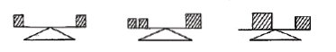
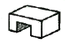
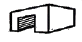
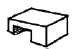
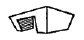
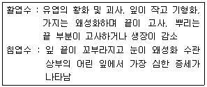
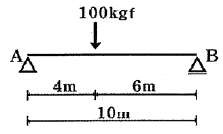
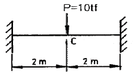

조경기사 (2008-09-07 기출문제)
1과목: 조경사
1. 용안사 방장정원의 설명 중 맞지 않는 것은?
- 추상적 고산수 기법을 사용하였다.
- 구릉지에 15개의 돌을 5군으로 배치하였다.
- 흰 모래를 깔아 마감하였다.
- 돌은 수학적 비례에 의해 의도적으로 배치하였다.
(정답률: 33%)

2. 다음 중 정원의 일대를 자세히 묘사한 그림이 남아 있지 않는 정원은?
- 담양 소쇄원
- 구례 운조루
- 영양 서석지
- 시울 옥호정
(정답률: 33%)
3. 프랑스의 풍경식 정원 가운데서 저명한 것으로 해당 없는 것은?
- 프티트리아농
- 시뵈베로원
- 말메이존
- 예름논밀
(정답률: 66%)
4. 한국의 누각과 정자에서 전통적인 경관처리 기법 중 가장 기본이 되는 개념은?
- 허
- 취경
- 올경
- 다경
(정답률: 80%)
5. 조선시대 서원 조경의 대상지와 대표할 수 있는 대(臺)의 연결이 일치하지 않는 것은?
- 소수서원의 영귀대
- 도산서원의 운영대와 천연대
- 옥산서원의 사신오대
- 무성서원의 유상대
(정답률: 49%)
6. 조선시대의 도읍은 풍수지리설의 영향으로 한양으로 정하여 졌다. 당시 한양의 진산이라고 볼 수 있는 것은?
- 북악산
- 남산
- 북한산
- 관악산
(정답률: 54%)
7. 「대관원」이라는 "욕양선억"의 수법으로 "억경"이라고도 하는 가상(假想)의 정원으로 중국정원 조성에 영향을 미친 책은?
- 원야
- 홍루몽
- 장물지
- 열하일기
(정답률: 42%)
8. 성곽의 수문 형식 중 배수용량이 큰 지점에 사용되는 것은?
- 절개식
- 개구식
- 홍예식
- 평거식
(정답률: 52%)
9. 다음 중 Ha-Ha라고 부르는 Sunken fence를 고안해낸 사람은?
- Vanbrugh
- Kent
- Capabllty Brown
- Brildgeman
(정답률: 68%)
10. 르네상스시대 이탈리아 정원에 관한 설명 중 틀린 것은?
- 지형, 기후적인 조건 등으로 구릉 위에 빌라를 세웠다.
- 필라니(Pliny the Younger)의 빌라에 관한 연구, 고대로마의 빌라 영향을 받고 메디치가의 후원으로 융성했다.
- 물이 풍부하여 주고 넓은 수면을 구성하여 반영, 반사의 효과를 도모했다.
- 강산 축선, 흰대리석과 암록색 식물에 의하 콘트리스트 조망 등을 중시했다.
(정답률: 69%)
11. 신라말 진성여왕(887-897)때에 최치원(崔致遠)이 조성한 조경 유식은 다음 중 어느 것인가?
- 경주 남산의 독서당(讀書堂)
- 함양읍 대덕리의 상림원(上林園)
- 해인사(海印寺)의 홍류동계곡(紅流溪谷)
- 경주 남산의 상서장(上書莊)
(정답률: 63%)
12. 이슬람(Islam) 문화의 정원양식에 대한 설명으로 틀린 것은?
- 페르시아 정원의 골격은 물, 녹음수, 동물 형태의 조각물로 이루어졌다.
- 이란의 정원은 보통 주건물의 불향이나 동향에 위치하고, 사막으로부터 먼지, 모래, 바람을 피하고 외적을 방비하며 프라이버시를 확보하였다.
- 마이단(Maidan-Isfahan)은 페르시아(Persia)의 오픈스페이스를 일컫는다.
- 인도의 정원문화는 녹음을 사랑하여 녹음수가 중요시되었고 온갖 화초로 화단을 만들었다.
(정답률: 60%)
13. "Greensward plan"은 어느 공원을 건설하기 위한 계획이엇는가?
- Birkenhead Park
- Victoria Park
- centeral Park
- Prospect Park
(정답률: 80%)
14. 16C 후반부터 17C말까지의 이탈리아 르네상스 정원에서 나타나는 특징적 국면이라고 보기 어려운 것은?
- 정원과 주변 자연의 조화
- 기능성보다는 심미성 위주의 정원 구조물
- 개성적인 형태의 추구
- 정원부지 선택의 자유
(정답률: 45%)
15. 다음 중 몽창국사(夢窓國師)의 작정 활동과 관련이 없는 것은?
- 동삼조전(東三條殿)
- 서방사(西芳寺)
- 천룡사(天龍寺)
- 영보사(永保寺)
(정답률: 46%)
16. 다음 중 영국읜 비큰히드 공원(Birkenhead Park)에 관한 설명으로 잘못된 것은?
- 왕실정원(王室庭園)이던 곳을 일반공원으로 개수한 것이다.
- 공원설계는 팩스턴(Joseph Paxton)이 맡았다.
- 설계자체는 풍경식 정원의 전통적인 면이 살아있고, 공원주위는 주택단지에 의해 둘러싸여 있다.
- 미국 옴스테드의 공원 개념 형성에 크게 영향을 끼쳤다.
(정답률: 56%)
17. 역사상 조경학적으로 의미 있는 최초의 일과 연대기 시로 맞지 않는 것은?
- 1851년 - 최초의 공원법 통과
- 1899년 - 최초의 미국조경가협회 조직
- 1903년 - 최초의 전원도시 탄생
- 1910년 - 최초의 수도권 공원계통 수립
(정답률: 40%)
18. 누정 팔경에 대한 설명 가운데 가장 거리가 먼 것은?
- 누각에는 팔경을 둔 곳이 많으나 정자에는 팔경을 둔 곳이 적다.
- 팔경대상지에 나타난 경관을 보면 춘하추동 조모사시로 표현된 것이 많다.
- 일반인들이 지나쳐 버리기 쉬운 축전한 시기의 특별한 경관을 즐기게 하기 위함이다.
- 누정에 팔경을 두는 이유는 승경에 대해 총분히 상상할 수 있도록 하기 위함이다.
(정답률: 64%)
19. 미국이 선도한 공원계통(park system)의 설계개념을 주기지역 개발 계획에 적용하여 성공한 것은?
- 메트로폴리탄 지역 계획
- 레드번 단지 계획
- 리버사이드 단지 계획
- 리치워드 주거 계획
(정답률: 64%)
20. 회양목 등으로 매듭 무늬를 만들어 매듭 안쪽의 공지에 여러 가지 색깍의 흙을 채워 넣는 방법과 화훼를 채워 넣는 방법이 나타난 시기는 어느 것인가?
- 고대 이집트
- 메소포타미아
- 중세
- 르네상스
(정답률: 54%)
2과목: 조경계획
21. 조경계획과정을 하나의 연속적인 과정으로 볼 때 일반적인 조경계획 과정을 가장 올바르게 배열한 것은?
- 자료수집 → 종합 → 대안 → 분석 → 계획안 작성
- 주료수집 → 분석 → 대안 → 종합 → 계획안 작성
- 자료수집 → 대안 → 분석 → 종합 → 계획안 작성
- 자료수집 → 분석 → 종합 → 대안 → 계획안 작성
(정답률: 44%)
22. 도시조경의 목표로서 적합하지 않은 것은?
- 친황경적 도시건설
- 친인간적 도시건설
- 아름다운 도시건설
- 교통편의적 도시건설
(정답률: 55%)
23. 연간 50만명이 유입되는 3계절형 관광지의 한 시설로 최대 일률이 1/60이 적용된다. 이 시설의 최대일 이용객의 평균 체류시간은 3시간(회전율: 1/1.9)이고, 시설이용률은 30%이며 다윈 규모는 2m2이다. 이 시설의 규모는?(단, 소수 둘번째 자리 미만은 버린다.)
- 2250.0m2
- 2631.5m2
- 3947.5m2
- 5263.0m2
(정답률: 59%)
24. 시각적 선호에 관한 계량적 모텔이 Y=3.3 + 10A + 0.3B + 0.1C + 0.8D와 같을 때 시각적 선호에 가장 큰 영향을 주는 변수는? (단, Y = 시각적 선호 값, A = 근경 식생구역의 경계선 길이, B = 중경 비식생구역의 경계선 길이, C = 중경 식생구역의 경계선 길이, D = 원경 식생구역의 경계선 길이)
- A
- B
- C
- D
(정답률: 65%)
25. 개인적 공간(personal space)에 대한 설명으로 틀린 것은?
- 동물에서도 나타난다.
- 주거지의 범죄율을 낮추기 위하여 Newman은 이 개념을 적용하였다.
- Hall은 인간을 상대로 하여 4종류의 대인간격으로 구분하였다.
- 개인의 주변에 형성되어 보이지 않는 경계를 지닌 공간이라 할 수 있다.
(정답률: 66%)
26. 주택건설기준에 관한 규정에서는 일정세대 이상의 공동주택의 어린이놀이터에 놀이시설과 기타 필요 시설을 설치하도록 규정하고 있다. 어린이놀이터를 설치하여야 하는 최소 세대수는?(오류 신고가 접수된 문제입니다. 반드시 정답과 해설을 확인하시기 바랍니다.)
- 50세대
- 80세대
- 100세대
- 150세대
(정답률: 37%)
27. 레크레이션 수요 가운데서 사람들로 하여금 패턴을 변경하도록 고무시키는 수요로서 수요 추정시에 반드시 고려해야 되는 것은?
- 잠재수요
- 유도수요
- 유사수요
- 표출수요
(정답률: 38%)
28. 이용자 형태의 현장 관찰의 이점이 아닌 것은?
- 관찰자가 있음으로 이용자의 형태에 변화가 생길 수 있다.
- 이용자의 형태를 연속적으로 살필 수 있다.
- 예기치 못한 형태를 도출해 낼 수 있다.
- 이용자 행태가 발생하는데 있어서 영향을 미치는 주변 분위기 조사가 가능하다.
(정답률: 70%)
29. 대기오염·소움·진동·악취 그 밖에 이에 준하는 공해와 각종사고나 자연재해 그밖에 이에 준하는 재해의 방지를 위하여 서치되는 도시공원 및 녹지 등에 관한 법률상의 녹지 유형은?
- 연결녹지
- 보전녹지
- 완충녹지
- 경관녹지
(정답률: 74%)
30. 맥하그(Ian Mcharg)가 주장한 '생태적 결정론(ecological determinism)'을 가장 올바르게 설명한 것은?
- 자연계는 생태계의 원리에 의해 구성되어 있으며, 따라서 생태적 질서가 인간환경의 물리적 형태를 지배한다는 이론이다.
- 생태계의 원리는 조경설계의 대안결정을 지배해야한다.
- 인간화경은 생태계의 원리로 구성되어 있으며, 따라서 인간사회는 생태적 진화를 이루어 왔다는 이론이다.
- 인간형태는 생태적 질서의 지배를 받는다는 이론이다.
(정답률: 50%)
31. 리모트 센싱에 의한 환경해석의 특징이 아닌 것은?
- 광역적인 환경을 파악할 수 있다.
- 시각적 선호도에 으힌 경관예측을 할 수 있다.
- 특정지역의 환경특성을 관역환경과 비교하면서 파악할 수 있다.
- 시간적 추이에 따른 환경의 변화를 파악할 수 있다.
(정답률: 64%)
32. 국립공원, 관광지 등의 계획을 위한 토지이용계획시 사장 보편적인 계획 과정은?
- 종합배분 → 적지분석 → 토지이용분류
- 토지이용분류 → 적지분석 → 종합배분
- 적지분석 → 토지이용분류 → 종합배분
- 토지이용분류 → 종합배분 → 적지분석
(정답률: 38%)
33. 국토의 계획 및 이용에 관한 법률에서 정하고 있는 개발제한구역(Green belt)을 지정하는 근본 목적으로 가장 적합한 것은?
- 도시의 무질서한 확산방지
- 도시의 과밀화 방지
- 도시의 위락환경 조정
- 도시 내 개발녹지 보전
(정답률: 67%)
34. 식생의 정밀 조사방법인 쿼드라트(Quadret)조사 방법에 대한 설명으로 가장 적합한 것은?
- 근접 촬영한 항공사진 위에 100m2정도의 표준구를 설정하여 평균 입목도를 조사한다.
- 산림지역 내에 200~500m2의 최소 정방형 크기로 표본구를 설정하여 수목의 종류, 크기, 위치 등을 조사한다.
- 산림지역 내에 100m 의 기준선을 설정한 후 좌우 30㎝ 범위 내 수목의 종류, 크기, 위치 등을 조사한다.
- 산림지역 내 최하단부에서 최상단부까지 기준선을 설정한 후 좌우 5m 범위 내 수목의 종류, 크기, 위치 등을 조사한다.
(정답률: 34%)
35. 다음 중 옥상 정원 계획시 틀린 것은?
- 지반의 구조 및 강도가 흙을 놓고 수목을 심거나 혹은 옥외 조각물을 놓을 정도가 되어야 한다.
- 수목의 생육상 관수를 해야 하므로 구조체의 방수성능이 우수해야 하며, 배수계통도 해결되어야 한다.
- 수목의 식재는 옥상의 특수한 기후조건을 고려해서 이루어져야 한다.
- 옥상정원을 조성할 경우 오픈스페이스가 왁보되므로 벤치 등의 기본시설을 도입하고, 정자, 파골라 등의 설치는 피해야 한다.
(정답률: 69%)
36. 조경접근 방법 중 순수 예술의 원리를 조경계획 및 설계에 응용하고자 하는 것은?
- 형식미학적 접근방법
- 심리학적 접근 방법
- 현상학적 접근 방법
- 경제학적 접근 방법
(정답률: 57%)
37. 시몬스(J.O.Simons)가 제시하고 있는 공간구성의 4가지 요소 중 제 3차 요소에 해당하는 것은?
- 계절
- 담
- 도로
- 수목
(정답률: 54%)
38. 다음 중 공원계획시 입지선정의 주요 기준요소로서 가장 거리가 먼 것은?
- 생산성
- 접근성
- 안전성
- 시설적지성
(정답률: 61%)
39. 도시공원 및 녹지 등에 관한 법률에 규정 된 정숙한 장소로 장래 시가화가 예상되지 아니하는 자연녹지지역에 성치 하는 묘지공원의 최소 규모 기준은?
- 50000m2
- 100000m2
- 300000m2
- 1000000m2
(정답률: 57%)
40. Friedmann 이 제시한 이용 후 평가(post occupancy evaluation)의 목적에 부합되지 않는 것은?
- 기존 환경의 개선 및 새로운 환경의 창조를 위한 의사 결정에 평가자료를 반영
- 인간과 자연환경의 관계성을 연구함으로써 자연환경에 대한 이해 증진
- 장래 설계교육에 필요한 중요한 자료 마련
- 넓은 의미의 환경영향평가를 위한 이용자 만족도 및 환경의 적합성 예측을 위한 능력개발 시도
(정답률: 59%)
3과목: 조경설계
41. 인출선의 용도 및 표시방법을 설명한 것 중 틀린 것은?
- 가는 파선으로 표시한다.
- 도면 내용물의 대상 자체에 설명을 기입하기 곤란한 경우 사용하는 선이다.
- 인출되는 쪽에 화살표를 붙여 인출한 쪽의 끝에 가로선을 긋고, 가로선 위에 쓴다.
- 한 도면 내에서는 인출선을 긋는 방향과 기울기를 가능하면 통일한다.
(정답률: 71%)
42. 도로모퉁이 부분의 보도와 차도의 경계선은 원호 또는 복합곡선이 되도록 하는데, 기능별 도로 분류의 곡선반경 기준이 틀린 것은? (단, 도시계획시설의 결정·구조 및 설치기준을 적용하고, 교차하는 도로의 기능별 분류가 서로 다른 경우는 제외한다.)
- 주간선도로 : 15m 이상
- 보조간선도로 : 12m 이상
- 집산도로 : 10m 이상
- 국지도로: 8m 이상
(정답률: 73%)
43. 휠체어 사용자가 통행할 수 있는 경사로의 유효 최소 폭은 몇 cm 이상으로 설치하는가?
- 50
- 70
- 100
- 120
(정답률: 60%)
44. 니얼 커크우드(Niall Kirkwood)가 분류한 조경 디테일에 대한 설명으로 틀린 것은?
- 조경 디테일은 표준 디테일과 비표준 디테일로 분류된다.
- 표준 디테일은 성능이 뛰어나기 때문에 반복적으로 사용되어 온 디테일로 규정적 디테일과 권장 디테일로 구분된다.
- 비표준 디테일인 토속적 디테일은 프로젝트의 특수한 조건을 고려하여 고객의 주문에 의해 만들어 진다.
- 규정적 표준 디테일은 볍규, 조례, 설계기준에 의해 강제적으로 준수되어야 하는 디테일이다.
(정답률: 31%)
45. 제도에서 척도(scale)에 대한 설명으로 틀린 것은?
- 척도란 대상물의 실제치수에 대한 도면에 표시한 대상물의 비를 말한다.
- 배척의 경우 척도는 X : 1 의 비로 표현한다.
- 도면에 사용한 척도는 도면의 표제란에 기입한다.
- 주택정원의 설계는 일반적으로 한눈에 볼 수 있는 1/500의 축척을 사용한다.
(정답률: 50%)
46. 자전거 보관대 설계시 고려해야 할 사랑으로 틀린 것은?
- 자전거 보관대는 고정형과 이동형으로 구분하여 설계한다.
- 도난이나 파손을 방지하기 위해 잠금장치를 설계한다.
- 고정식의 경우 이용이 많은 관계로 가급적 자전거보관대에 지붕 및 보호대를 설계하지 않는다.
- 지붕천막로프 연결시 장력이 균일하게 작용하여 처지거나 주름이 생기지 않도록 팽팽하게 한다.
(정답률: 79%)
47. 할프린(halprin, 1965)에 의해서 수행된 연속적 경관구성에 관한 연구의 내용이라고 불 수 없는 것은?
- 건물, 수목, 지현 등의 환경적 요소를 부호화하여 기록
- 공간형태보다는 시계에 보이는 사물의 상대적 위치를 기록
- 장소 중심적인 기록 방법이며, 시작적 요소가 첨가
- 폐쇄성이 비교적 낮은 교외지역이나 캠퍼스 등에 적용이 용이
(정답률: 56%)
48. 경관을 사진, 슬라이드 등의 방법을 통하여 평가자에게 보여주고 양극으로 표현되는 형용사 목록을 제사하여 경관을 측정하는 방법은?
- 어의구별척(senmantic differential scale)
- 순위조사(rank-ordering)
- 리커드 척도(likert scale)
- 쌍체비교법(paired comparison)
(정답률: 64%)
49. 다음 도시적으로 표현한 3개의 그림을 설명 할 수 있는 경관 구성 원리는?

- 반복(repetition)
- 비례(proportion)
- 균형(balance)
- 대칭(symmetry)
(정답률: 80%)
50. 특히 주의를 기울이지 않더라도 사람의 시선을 끌어 눈에 띄는 속성을 말하며, 다수의 대상이 존재할 때 어느 색이 보다 쉽게 지각되는지 또는 쉽게 눈에 띄는지의 정도를 의미하는 것은?
- 식별성
- 정서성
- 유목성
- 시인성
(정답률: 36%)
51. 서울특별시의 도시 이미지(Imege)를 분석한다고 할 때 광화문 네거리는 린치의 도시 이미지 형성에 이바지하는 물리적 요소 중 어느 것에 해당하는가?
- 모서리(edge)
- 통로(path)
- 결절점(node)
- 표지물(landmark)
(정답률: 67%)
52. 다음 중 배드민턴장 설계 기준으로 부적합한 것은?
- 경기장의 규격은 세로 13.4m 가로 6.1m 이다.
- 라인은 4cm 폭의 백색 또는 황색 서능로 그린다.
- 네트 포스트는 코트 표면으로부터 2.1m 의 높이로 사이드라인 안에 설치한다.
- 코트는 평활하고 균일한 면이어야 하나 옥외코트의 경우에는 배수를 위해 0.5% 까지의 기울기를 둔다.
(정답률: 60%)
53. 명도가 5, 채도가 6인 QKfrkstor의 먼셀 색표기가 옳은 것은?
- R5 5/6
- 5R 6/5
- R5 6/5
- 5R 5/6
(정답률: 57%)
54. 등고선 간격(수직거리)이 50m 일 때 경사도가 20%이면 축척(縮尺)1:25000인 지도상에서 등고선 간의 평명거리(수평거리)거리는?
- 0.5cm
- 1cm
- 2cm
- 3cm
(정답률: 49%)
55. 인체의 구조와 치수에 근거한 모듈의 개념을 도입하여 공간구성의 기본단위를 설정한 사람은?
- Aristoteles
- Le Corbusier
- K. Lynch
- Leonardo da Vinci
(정답률: 42%)
56. 경관의 물리적 특성 이외에 주요 조망점에서 보여지는 지각강도 및 관찰되는 회수를 고려하여 경관의 가치를 평가하는 방법은?
- Leopold 방법
- Peterson 방법
- Shafer 방법
- Iversojn 방법
(정답률: 44%)
57. 주차장법시행규칙에 따른 주차장의 설계시 이용할 주차단위구획의 기준으로 틀린 것은?
- 평행주차형식의 일반형 : 2.0m 이상 * 6.0m 이상
- 평행주차형식의 보도와 차도의 구분이 없이 주거지역의 도로 : 2.0m 이상* 5.0m 이상
- 평행주차형식 외의 경우 확장형 : 2.5m 이상 * 5.1m 이상
- 평행주차형식 외의 경우 장애인 전용 : 2.8m 이상 * 6.0m 이상
(정답률: 50%)
58. 한국산업규격(KS)의 건축제도 통칙에서 도면의 표시기호 중 일반 기호 'D'가 의미하는 것은?
- 길이
- 두께
- 지름
- 용적
(정답률: 45%)
59. 소점을 가장 많이 사용한 투시도는?




(정답률: 65%)
60. 주변에 옹벽이나 급경사지 등이 있어 위험이 있는 놀이터, 휴게소, 산책로등에 설치하는 안전난간에 대한 설계기준으로 틀린 것은?
- 간살의 간격은 안목치수 10㎝ 이하로 한다.
- 높이는 바닥의 마감면으로부터 110㎝ 이상으로 한다.
- 계단 중간에 설치하는 난간 등 위험이 적은 장소의 난간 간살을 안목치수 30㎝ 이하로 한다.
- 철근콘크리트 또는 강도 및 내구성이 있는 재료로 설계한다.
(정답률: 40%)
4과목: 조경식재
61. 고속도로 중앙분리대 정형식재에 있어서 마주오는 차향의 불빛을 차광하기 위하여 수관폭 80㎝ 인 광나무를 식재하고자 할 때 가장 효과적인 식재간격은? (단, 차량라이트 조사각(θ)은 12°, 조사각의 환산값은 소수 첫째자리까지만 적용한다)
- 3m
- 4m
- 5m
- 6m
(정답률: 48%)
62. 자연 특성을 활용한 공원의 계획 및 설계를 할 경우, 야생생물과 관련한 식재 설계 기법의 설명이 틀린 것은?
- 생물 다양성 증진을 위해서는 지피층 - 관목·덤불층 - 교목층으로 다층구조화하는 것이 바람직 하다.
- 야생동물을 유인하는 수종으로는 작살나무, 팥배나무, 산사나무, 노간주나무, 신나무 등이 있다.
- 이용이 적은 초지는 자연형 초지로 한다.
- 천공재료는 가급적 사용하지 않는다.
(정답률: 58%)
63. 다음 설명은 어떤 무기염료의 결핍 증상인가?

- Ca
- N
- K
- P
(정답률: 50%)
64. 광 조상점(light compensation point)이 가장 낮은 식물들로만 짝지어진 것은?
- 회양목, 주목
- 소나무, 미국측백
- 메타세콰이어, 반송
- 오동나무, 자작나무
(정답률: 50%)
65. 다음 중 조경 수목의 이식에 대한 적응성이 가장 쉬운 수종은?
- Pinus bungeana
- Liriodendron tulipifera
- Abies holophylla
- Juniperus chinensis
(정답률: 50%)
66. 조경 수목의 삼목용 토양 재료로 부적당한 것은?
- 버미큘라이트
- 펄라이트
- 마사토
- 부엽토
(정답률: 36%)
67. 수목의 굴취 방법 중 동토법의 설명으로 틀린 것은?
- 부득이 겨울에 수목을 굴취할 때 사용하는 방법이다.
- 잔뿌리의 손상이 적어 뿌리감기를 하지 않아도 된다.
- 상록관목이나 낙엽관목 등 크기가 작은 수목에만 사용할 수 있다.
- 동결심도가 높은 지방이나 낙엽수의 휴면기에는 뿌리둘레를 파도 흙이 흘러내리지 않아 그래도 굴취하는 방법이다.
(정답률: 44%)
68. 다음 중 자연풍경식 식재의 기본양식에 해당되는 것은?
- 교호식재
- 대식
- 단식
- 임의식재
(정답률: 67%)
69. 다음 중 수목의 텍스쳐(texture) 측면으로 보아 규모가 큰 건물에 가장 잘 어울리는 수종은?
- Pinus koraiensis
- Chamaecyparis obtusa
- Aesculus turbinata
- Buxus microphylla
(정답률: 36%)
70. Populus nigra, Betula platyphylla와 같은 수목을 인공지반위에 식재하려고 할 때 필요한 생육 최소토양심도는?
- 45㎝
- 60㎝
- 90㎝
- 150㎝
(정답률: 50%)
71. 군집 A는 20종을 포함하고 있고,, 군집 B는 18종을 포함하고 있으며, 이 두 군집에 공통된 종이 12종이라면 이 군집의 유사성을 측정 하기 위한 Sø rensen 계수는?
- 0.16
- 0.32
- 0.63
- 0.79
(정답률: 52%)
72. 조경식재의 주괸 효과로써 적합하지 않은 것은?
- 온도 조절
- 사생활 보호
- 양질으리 목재 생산
- 통행의 조절
(정답률: 75%)
73. 일반적으로 수림대가 방충기능을 발휘하기 위해서는 그 울폐도가 문제가 된다. 구림대는 정면에서 보아 가지, 잎, 줄기가 전체 임면의 어느 정도의 면적을 가려줄 때 방풍기능이 최적인가?
- 약 95%
- 약 80%
- 약 60%
- 약 40%
(정답률: 36%)
74. 일반적으로 수피에 얼룩무늬를 갖고 있지 않은 수종은?
- Stewartia Koreana Nak.
- Platanus occidentalis L.
- Chaenomeles sinensis KOEHNE
- Liriodendron tulipifera L.
(정답률: 47%)
75. 식생과 관련된 설명 중 틀린 것은?
- 어떤 군락을 특징 할 수 있는 중군을 표징종(character species)이라 한다.
- 인간에 의한 영향을 받지 않은 식생을 대상식생(substitute vegetation)이라 한다.
- 군집 속에서 아군집을 구분하기 위해 양적으로 우점하고 있는 종을 식별종(differences species)이라 한다.
- 변화해 버린 입지 조건하에서 인간에 의한 영행이 제거 되었다고 할 때 성립이 예상되는 자연식생을 현대의 잠재자연식생(potential natural vegetaton) 이라 한다.
(정답률: 70%)
76. 일반적으로 사고 방지를 위해서 고속도로에 명암순응식재를 설치 할 때 적합한 장소는?
- 터널입구를 가정으로 한 300m 정도 구간
- 급경사 도로를 기점으로 한 300m 정도 구간
- 급커브 도로를 기점으로 한 300m 정도 구간
- 낙석 위험이 있는 도로를 기점으로 한 300m 정도 구간
(정답률: 72%)
77. 수종들을 이용상으로 분류할 때 녹음용 수종으로만 짝지어진 것은?
- 느티나무, 벽오동, 칠엽수, 팽나무
- 삼나무, 팽나무,m 후박나무, 편백
- 자귀나무, 가중나무, 회화나무, 능수버들
- 가이즈까향나무, 보리수나무, 산딸나무, 층층나무
(정답률: 52%)
78. 척박지의 지력을 증진시키는 수목을 비료목이라 하는데, 다름 비료목 중 콩과에 속하지 않는 비료목끼리 짝지어진 것은?
- 자귀나무, 다릅나무
- 오리나무, 보리장나무
- 주여나무, 산오리나무
- 등나무, 소귀나무
(정답률: 47%)
79. 식물 군락을 성립시키는 내적 환경 요인은?
- 경합과 공존
- 기온과 광선
- 토양수분과 토성
- 병해충과 벌목
(정답률: 73%)
80. 다음 수종 중 굴취시 수목규격을 표시할 때 근원직경(R)으로 표기하는 수종은?(오류 신고가 접수된 문제입니다. 반드시 정답과 해설을 확인하시기 바랍니다.)
- 자작나무
- 튤립나무
- 메타세콰이어
- 층층나무
(정답률: 38%)
5과목: 조경시공구조학
81. 그림과 같이 단수보에 하중이 작용할 때 지점 A의 반력은?

- 40kgf
- 50kgf
- 60kgf
- 70kgf
(정답률: 53%)
82. 양단 고정보에서 C점의 휨모멘트는? (단, 보의 휨강도 EI 는 일정하다)

- 3.5 tf · m
- 4.0 tf · m
- 4.5 tf · m
- 5.0 tf · m
(정답률: 41%)
83. 대상물을 강조하고 극적인 연출을 위하여 환경 조각물들에 적용되어 두드러진 시각적 효과를 연출 할 수 있는 옥외조명기법은?
- 신포식조명
- 각광조명
- 그림자조명
- 질감조경
(정답률: 64%)
84. 다음 중 살수 관개 시설의 압력손실 요인이 아닌 것은?
- 급수계량기의 압력손실
- 살수 지관의 압력손실
- 높이 차에 따른 압력손실
- 펌프의 압력손실
(정답률: 30%)
85. 목재의 사용환경 구분과 방부제 설명이 맞지 않은 것은?
- H1등급은 건조한 실내조건, 건재 해충에 대한 방충성능과 변색오염균에 대한 방미성능을 필요로 하는 곳에 사용한다.
- H2등급은 비와 눈을 맞지는 않으나 결로의 우려가 있는 환경, 플로어링, 벽체 프레임에 해당한다.
- H3등급은 야외에서 눈비를 맞는 곳 부후·흰개미 피해의 우려 환경으로 토대용 목재, 야외접합부재 등에 사용한다.
- H4등급은 토양 및 담수와 접하는 환경으로 BB, IPBC 등 방부제가 있다.
(정답률: 62%)
86. 단면 2차 모멘트(Moment of Inertia)에 관한 설명 중 옳은 것은?
- 단면적에 거리를 곱한 값이다.
- I = ∫y3dA 로 표시된다.
- 단위는 cm2이다.
- 단면에서 단면 2차 모멘트 값 I 가 최대 혹은 최소가 되믐 축을 주축이라 한다.
(정답률: 38%)
87. 식재공사시 지주목을 설치하지 않을 때 식재 본 품셈의 몇%를 감하는가?
- 10%
- 20%
- 25%
- 30%
(정답률: 44%)
88. 안전율을 고려하여 허용응력을 구조재의 최고강도보다 상당히 적게하는 이유로 부적합한 것은?
- 구조재료의 성질이 반드시 같지 않으며, 내무에 결함이 있을 수 있다.
- 재료가 부식하거나 충화하여 부재단면이 감소할 수 있다.
- 구조계산의 이론이 불완전하며, 이론과 실제가 일치하지 않을 수 있다.
- 구조재료의 강도는 정적으로만 작용하므로 큰 차이가 발생 할 수 있다.
(정답률: 48%)
89. 평판측량에서 기지점으로부터 미지점 또는 미지점으로부터 기지점의 방향을 앨리데이트로 시준하여 방향선을 교차시켜 도상에서 미지점의 위치를 도해적으로 구하는 방법은?
- 방사법
- 교회법
- 전진법
- 편각법
(정답률: 49%)
90. 광원의 소비전력이 200[W]이고, 광원으로부터 발생하는 광속이 150[Im]일 경우 관원의 효율[Im/W]은?
- 0.50
- 0.75
- 0.90
- 1.00
(정답률: 54%)
91. 토양의 공극량(孔隙量) 설명 중 틀린 것은?
- 부식물질이 많은 토양은 공극량이 많다.
- 공극이 크면 구조물의 기반으로서 불안정하다.
- 양질토보다는 사질토가 공극량이 많다.
- 심토보다는 표토에서 공극량이 많다.
(정답률: 47%)
92. 우수를 길이방향으로 집수하기 위하여 사용되는 선적인 배수방법으로 직접 지하관거와 연결되는 시설물로 유입구가 그레이팅으로 처리되어 있는 것은?
- 지역배수구
- 트렌치
- 집수정
- 빗물받이
(정답률: 59%)
93. 콘크리트를 반죽한 직후 아직 굳지 않은 콘크리트 성질을 나타내는 용어로 콘크리트 부어넣기 작업의 난이도(難易度)정도 및 재료 분리에 대한 저항성을 나타내는 성질을 의미 하는 것은?
- 반죽질기(Concistency)
- 시공연도(Workability)
- 성형성(Plasticity)
- 마무리 정도(Finishability)
(정답률: 33%)
94. 담장 붕괴를 발생 시키는 기초부 부등침하(不等沈下)의 주요 원인에 속하지 않는 것은?
- 이질지층(異質地層)
- 연약지반(軟弱地盤)
- 지하수위변경(地下水位變更)
- 등분포 과하중(過荷重)
(정답률: 46%)
95. 재료의 역학적 성질 중에서 취성(脆性)이 가장 큰 재료는?
- 유리
- 고무
- 강철
- 화강암
(정답률: 38%)
96. 공정관리, 원가관리, 품질관리, 안전관리를 위한 방법이 틀린 것은?
- 공정관리 - PERT
- 원가관리 - 실행예산서
- 품질관리 - CPM
- 아전관리 - 재해방지계획
(정답률: 52%)
97. 절취되어 흐츠러진 상태로 쌓여저 있는 사질토를 백호우를 이용하여 덤프트럭에 적재하려 할 때 시간당 작업량을 구하기 위한 토량환산 계수(f)는 얼마를 적용하여야 하는가? (단, 사질토의 L값 = 1.25, C값 = 0.95)
- 1.25
- 1.⑤
- 1
- 0.8
(정답률: 46%)
98. 자금력과 신용 등에서 적합하다고 인정되는 3~7개의 특정 회사를 선정하여 입찰시키는 방법은?
- 일반경쟁입찰
- 지명경쟁입찰
- 제한경쟁입찰
- 특명경쟁입찰
(정답률: 59%)
99. 금속재인 연강철선을 정방형 또는 장방형으로 전기 용접하여 블록 또는 포장공사시 균열방지를 위해 많이 활용 되는 것은?
- 와이어 라스
- 와이어 메시
- 가시철선
- PC 강성
(정답률: 66%)
100. 수준측량을 실시한 결과 기준점의 후시(B.S)가 2.213m, 픅정으로 부터의 미지점의 전시(F.S)가 1.897m를 얻었다. 이 때 기계고(I.H)와 미지점의 지반고(G. H1)는? (단, 기준점의 지반고는 50.0m 이다)
- I.H = 52.213m , G. H1 = 50.316m
- I.H = 52.213m , G. H1 = 51.897m
- I.H = 51.879m , G. H1 = 50.316m
- I.H = 51.897m , G. H1 = 51.897m
(정답률: 52%)
6과목: 조경관리론
101. 다음 중 그을음병(sooty mold)과 관계 있는 해충은?
- 진딧물
- 풍뎅이
- 박쥐나방
- 매미나방
(정답률: 73%)
102. 집수구, 맨홀의 보수 및 점검에 관한 내용 중 틀린 것은?
- 정기적인 청소가 필요하다.
- 지표면이 토사지나 황폐한 구릉의 경사면인 경우에는 청소횟수를 증가시킨다.
- 주변의 토사 등이 흘러 들어오지 못하게 집수구를 조금 높인다.
- 뚜껑이 파손되었을 경우 보수 전에 표지판을 설치하고 즉시 보수를 한다.
(정답률: 63%)
103. 제초제인 2,4-D의 특성 설명으로 틀린 것은?
- 원제는 백색의 비늘모양의 결정이다.
- 벼 이외의 밭작물 특히, 주위의 다른 작물에 살포약액이 비산되어 잎, 줄기 등에 묻으면 약해가 발생한다.
- 극히 낮은 농도에서도 식물을 고사시킨다.
- 페녹시계로 본답후기 경엽처리용 제초제이다.
(정답률: 48%)
104. 다음 중 콘크리트의 균열폭이 0.2㎜ 이하의 균일부가 있을 때 적용하는 가장 적합한 보수 방법은?
- 메틸에틸케톤공법
- 표면실링공법
- V장형 절단공법
- 고무압식주입공법
(정답률: 76%)
1⑤. 공정관리 곡선 작성 중 아래 표에서와 같이 실시 공정곡선이 예정 공정 곡선에 대해 항상 안전범위 안에 있도록 예전 곡선(계획선)의 상하에 그린 허용한계선을 일컫는 명칭은?
- S - curve
- progressive curve
- banana curve
- net curve
(정답률: 72%)
106. 조경공간에서 유지관리의 기본적 목적에 들지 않는 것은?
- 수익성
- 기능성
- 관리성
- 안전성
(정답률: 84%)
107. 다음 목재의 방부제 종류 중 유용성인 것은?
- 유기요오드화합물계
- 크롬·구리·비소 화합물계
- 산화크롬·구리화합물계
- 붕소·붕산화합물계
(정답률: 68%)
108. 겨울철에 동사한 낙엽수를 보식하기 위하여 근원직경이 45㎝인 느티나무를 포장으로부터 굴취 할 때, QN리분의 직경(㎝)은 얼마가 적당한가? (단, 상수는 상록수 4, 낙엽수 3을 적용한다.)
- 92
- 1⑤
- 132
- 150
(정답률: 48%)
109. 일반적으로 침엽수의 전정시기로 다음 중 가장 적합한 것은?
- 4~5월
- 6~7월
- 8~9월
- 11~12월
(정답률: 39%)
110. 베모밀 50% 유제 200cc를 0.⑤%로 희석 하려고 할 때 요구되는 물의 양은?
- 약 120L
- 약 180L
- 약 200L
- 약 400L
(정답률: 57%)
111. 화목류의 개화상태를 향상시키기 위한 조작이 아닌 것은?
- 환상박피를 한다.
- C/N률을 어느 정도 높여준다.
- 단근조치를 한다.
- 인산과 칼륨질 비료를 줄인다.
(정답률: 41%)
112. 다음 중 계면 활성제의 종류가 아닌 것은?
- 유탁제
- 유화제
- 습윤제
- 전착제
(정답률: 40%)
113. 다음 중 생울타리(Hedge)를 식재한 후 시비(施肥)하는 방법은?
- 전면시비(全面施肥)
- 점상시비(点狀施肥)
- 선상시비(線狀施肥)
- 환상시비(還狀施肥)
(정답률: 66%)
114. 잔디에 녹병이 발생했을 때 조치하는 방법으로 틀린 것은?
- 질소질 비료를 뿌려 생장을 촉진시킨다.
- 잎을 깎아 통풍이 잘 되게 한다.
- 침투이행성인 포스파미돈액제(디무르)를 뿌린다.
- 충분한 양을 오전에 관수한다.
(정답률: 25%)
115. 흰불나방에 관한 설명으로 잘못된 것은?
- 1년에 2회 발생하고, 고치 속에서 번데기로 월동한다.
- 유충이 잎을 식해하는데, 제 3령까지의 유충은 실을 토하영 잎을 감싼다.
- 천적이 없으므로 화학방제안을 실시한다.
- 방제약제로는 트리클로르폰수화제(디프록스)가 효과적이다.
(정답률: 68%)
116. 공원에서 청소한 낙엽을 모아 소각 처리가 재가 잘못 묻어 어린이가 화상을 입었을 경우 어느 사고에 해당하는가?
- 설치하자
- 관리하자
- 이용자 부주의
- 보호자 부주의
(정답률: 83%)
117. 공원의 관리에 근린 주거지 내 주민단체가 참가할 경우 효율적으로 수행할 수 없는 작업은?
- 시비
- 제초
- 관수
- 쓰레기 처리
(정답률: 52%)
118. 조경관리 업무 중에서 도급방식이 효과적인 것은?
- 재빠른 대응이 필요한 업무
- 금액이 적고 간편한 업무
- 일상적으로 행하는 유지관리적인 업무
- 전문적지식, 기능, 자격을 요하는 없무
(정답률: 52%)
119. 식물병의 혈청학적 진담법에 속하는 것은?
- 황산구리법
- 괴경지표법
- 효소결합항체법
- 유출검사법(Ooze test)
(정답률: 68%)
120. 공정관리상 최적공기란 직접비와 간접비를 합한 총공사비가 최소가 되는 가장 경제적인 공기를 말한다. 시공속도를 빠르게 하면 공기 단축에 따른 일반적인 직, 간접비의 증감 사항으로 맞는 것은?
- 직접비 : 증가, 간접비 : 감소
- 직접비 : 감소, 간접비 : 증가
- 직접비 : 증가, 간접비 : 증가
- 직접비 : 감소, 간접비 : 감소
(정답률: 67%)
구릉지에 15개의 돌을 5군으로 배치한 것은 다른 일본식 정원에서 사용되는 기법 중 하나인데, 이는 용안사 방장정원과는 관련이 없다.